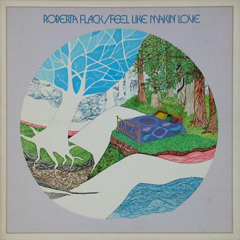

LP
Feel Like Makin' Love
Roberta Flack
Media: — · Sleeve: —
—
Personal
Discogs SuggestedCA$53.15
Discogs MedianCA$53.15
Discogs HighCA$53.15
- Physical Copy ID
- BB-LP-110
- Year
- 1975
- Label
- Atlantic
- Catalog #
- ATL 50049-Y
- Country
- DEGermany
- Genre / Style
- Funk / Soul · Rhythm & Blues, Soul